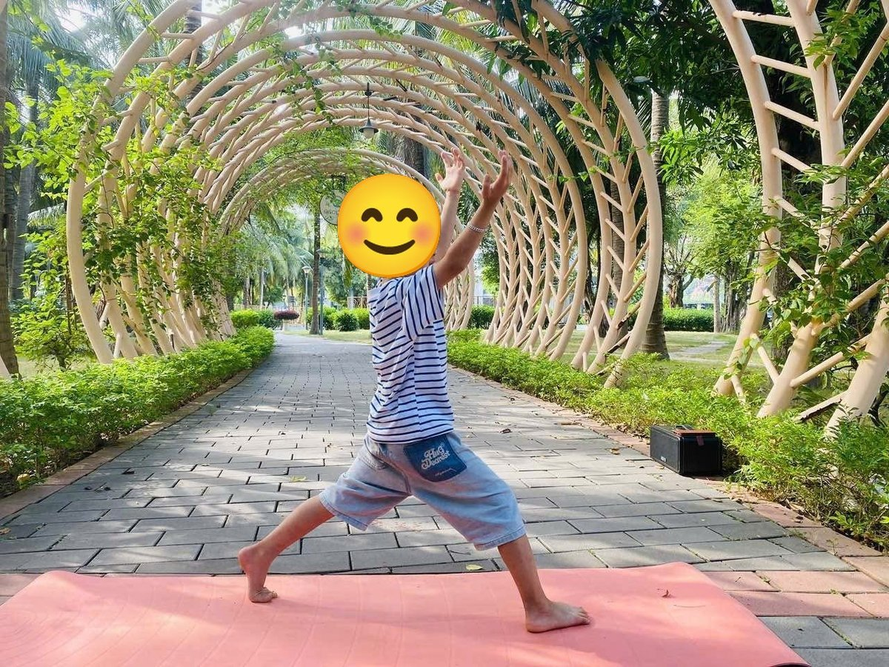
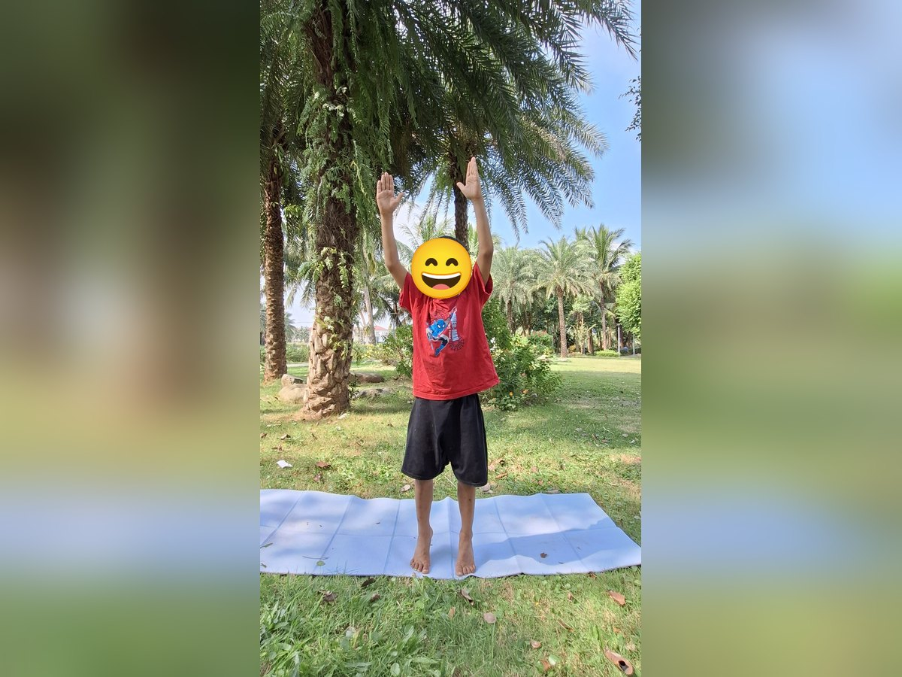
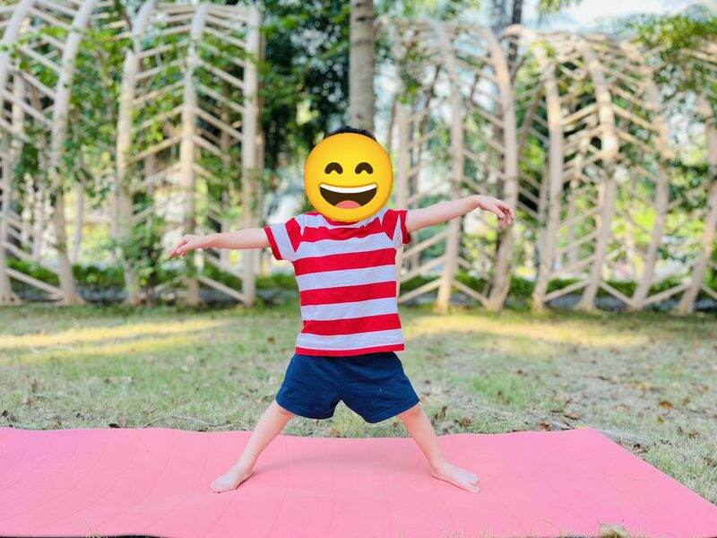
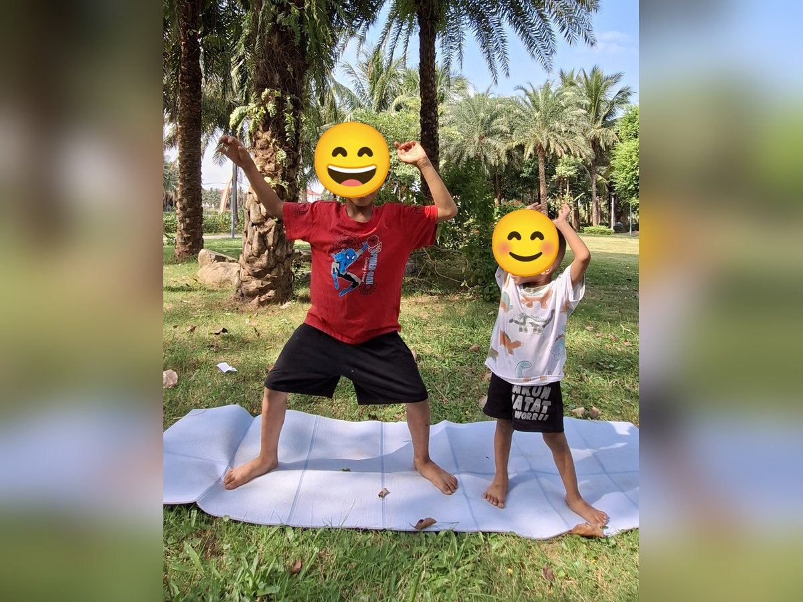
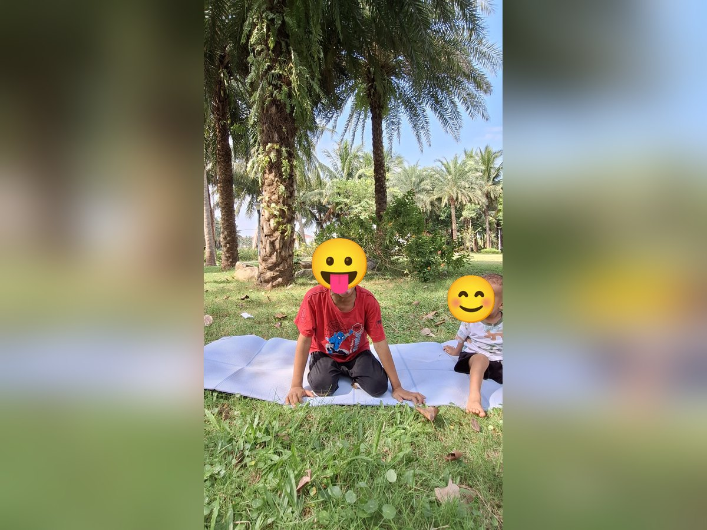
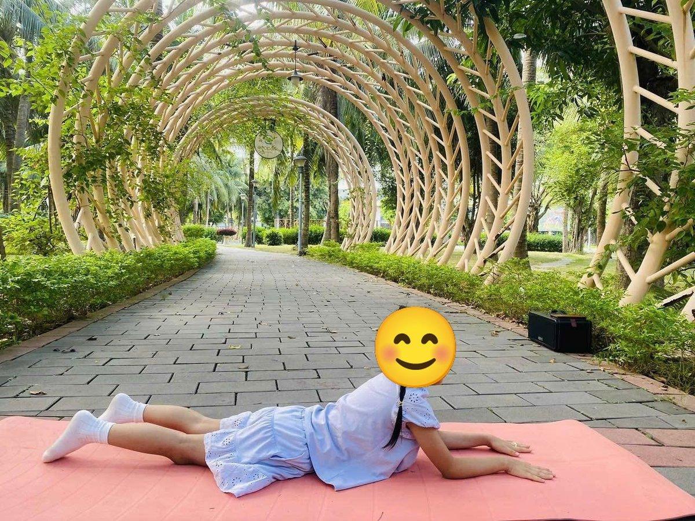
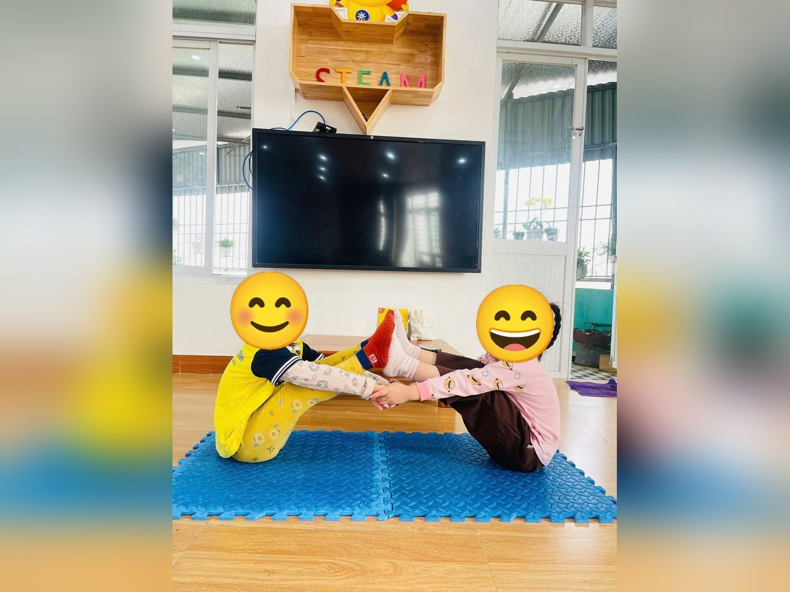
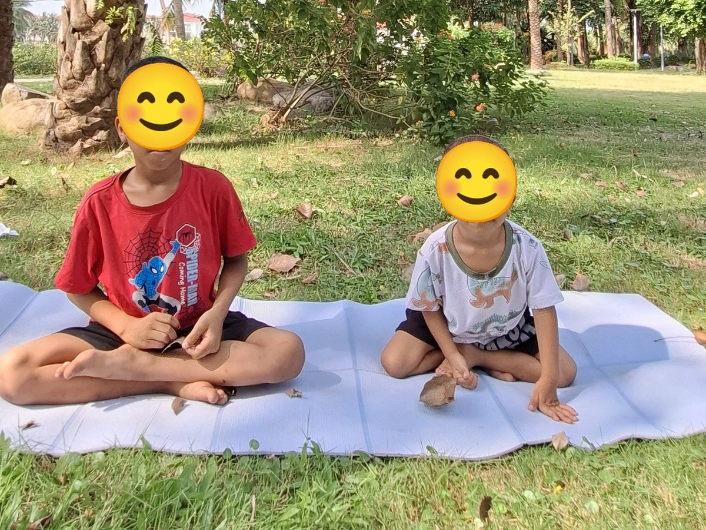
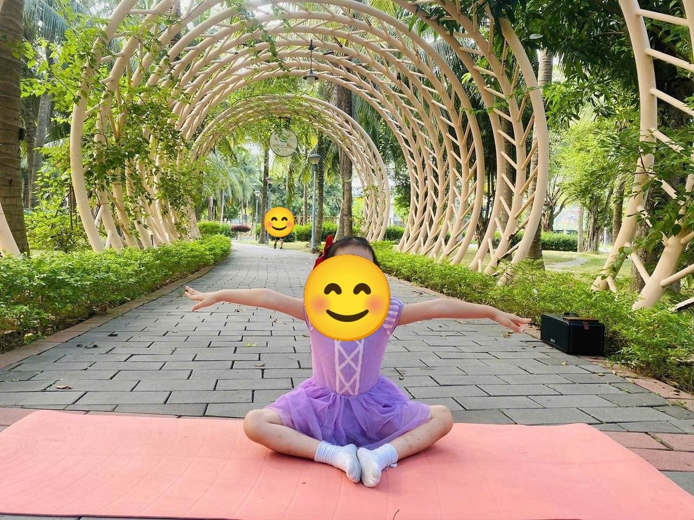

Chánh niệm
Ứng dụng yoga cân bằng phục hồi cho bé nhút nhát, ngại giao tiếp: giúp con mạnh dạn từng chút một

Mẹ dắt con đến lớp. Con nép sau lưng mẹ, tay níu vạt áo. Cô hỏi tên, con cúi gằm mặt. Cả buổi con đứng ở mép thảm, nhìn các bạn chơi.
Rồi trên đường về, con kể lại từng động tác. Nhớ hết.
Cô gặp cảnh này nhiều lắm. Và bố mẹ thường hỏi cô cùng một câu: “Cô ơi, làm sao cho cháu mạnh dạn lên?” Câu trả lời của cô không có mẹo nào nhanh. Chỉ có từng bậc nhỏ, một cái thảm, một hơi thở, và người lớn đủ kiên nhẫn đứng đợi.
Nhút nhát không phải là lỗi
Có những đứa trẻ sinh ra đã dè dặt hơn. Nhà tâm lý học Jerome Kagan (Đại học Harvard) theo dõi trẻ từ khi mới 4 tháng tuổi trong nhiều năm, kể lại trong cuốn Galen’s Prophecy (1994). Khoảng một phần năm số bé phản ứng rất mạnh với những gì mới lạ: cựa quậy nhiều, khóc nhiều. Lớn lên, nhiều bạn trong số đó thận trọng hơn trước người lạ. Nhưng không phải bạn nào cũng vậy. Một phần đã cởi mở dần theo năm tháng. Tính khí là điểm xuất phát, không phải bản án.
Cũng cần tách hai điều hay bị nhầm. Trong cuốn sách bán chạy Quiet (2012), Susan Cain viết: hướng nội là thích yên tĩnh, nạp lại năng lượng khi ở một mình. Nhút nhát là sợ bị người khác đánh giá. Một bạn hướng nội có thể rất tự tin, chỉ là bạn ấy thích chơi với một hai người hơn cả đám đông. Cô không muốn biến một em bé trầm tĩnh thành một em bé ồn ào. Cô chỉ muốn nỗi sợ đừng giữ con lại.
Còn những bạn rất nhạy cảm thì sao? Các con nghe được tiếng động nhỏ, thấy được nét mặt người lớn thay đổi, nhớ rất lâu một câu nói nặng lời. Ở lớp, cô thấy những bạn ấy thường quan sát rất kỹ trước khi làm. Khi đã làm, thì làm rất cẩn thận. Đó là một món quà, nếu người lớn biết chờ.
Tự tin đến từ việc làm được, từng chút một
Nhà tâm lý học Albert Bandura dành cả đời nghiên cứu điều làm nên niềm tin “mình làm được”. Trong cuốn Self-Efficacy (1997), ông chỉ ra nguồn mạnh nhất không phải lời khen, cũng không phải lời động viên. Mà là những lần chính mình đã làm được. Lần sau dựa vào lần trước.
Vì vậy, ở lớp cô không đẩy bạn nhút nhát lên đứng trước cả lớp. Cô xây cho con một cái thang. Mỗi bậc thấp thôi, đủ để con bước lên mà không ngã. Đứng vững ở bậc này rồi mới sang bậc kế.
🪜 Thang tự tin 5 bậc
Chạm vào từng bậc để xem. Khi con đã làm được, bấm “Con làm được rồi” để đánh dấu. Máy của bạn sẽ nhớ giúp.
Dấu hiệu con đã vững:
Có bạn đi hết năm bậc trong một tháng. Có bạn đứng ở bậc một cả học kỳ. Cả hai đều đang đi. Đôi khi con lùi lại một bậc, sau một trận ốm, một lần chuyển nhà. Không sao. Bậc cũ vẫn còn đó.
Hơi thở trước khi nói
Bạn nhỏ sắp phải nói trước mọi người thì tim đập nhanh, hơi thở lên tận ngực, ngắn và gấp. Giọng bị kẹt lại. Người lớn mình cũng vậy, trước một buổi họp quan trọng.
Thở ra chậm và dài hơn hít vào giúp cơ thể dịu xuống. Ở lớp, cô dạy các con một bài rất ngắn, gọi là “3 hơi của sư tử con”:
🌬 Hơi thứ nhất: đặt tay lên bụng
Hít vào bằng mũi, bụng phồng lên dưới bàn tay như quả bóng. Thở ra bằng miệng, chậm, như thổi một ngọn nến cho lung lay.
🦶 Hơi thứ hai: ấn chân xuống đất
Vẫn thở như vậy, nhưng lần này nghĩ tới hai bàn chân. Chân đang chạm đất. Đất đang đỡ mình.
🦁 Hơi thứ ba: mỉm cười rồi nói
Thở ra xong, mỉm cười một chút. Rồi mới nói câu đầu tiên. Câu đầu tiên ngắn thôi.
Bài này con làm được ở bất kỳ đâu, không ai nhận ra. Trước khi vào lớp, trước khi chào cô, trước khi giơ tay. Cô dạy lúc con đang vui, lặp đi lặp lại, để lúc run con tự nhớ ra. Bạn nào thích thở có tiếng thì xem thêm thở con ong và hơi thở bong bóng.
Video: 7 tư thế sức mạnh, tập cùng cô
Hơn một phút. Bố mẹ mở cho con xem, rồi đứng lên làm cùng con. Vòng tròn ở góc ảnh phồng lên khi hít vào, thu lại khi thở ra.
Vì sao lại là tư thế “sức mạnh”?
Năm 2010, ba nhà nghiên cứu Dana Carney, Amy Cuddy và Andy Yap đăng một nghiên cứu trên tạp chí Psychological Science về “tư thế quyền lực”: đứng dang rộng, ngực mở trong hai phút. Nghiên cứu ấy nổi tiếng khắp thế giới. Về sau, nhiều nhóm khác làm lại thì phần thay đổi hormone không lặp lại được. Điều còn lại, khá vững, là người ta cảm thấy mạnh mẽ hơn một chút.
Cô kể điều này để bố mẹ không kỳ vọng phép màu. Đứng tư thế ngôi sao không biến con thành người khác.
Nhưng cô thấy một điều ở lớp, năm này qua năm khác. Một bạn co vai, cúi đầu, tay ôm lấy người thì giọng nói cũng nhỏ theo. Khi con đứng thẳng, ngực mở, chân vững, mắt nhìn ra phía trước, con dễ nói hơn. Không phải vì phép màu. Vì cơ thể và cảm xúc đi cùng nhau.
8 tư thế giúp con đứng vững, nói rõ
Sáu tư thế đầu con tự làm được. Hai tư thế cuối cần một người bạn, là bước đệm để con bắt chuyện. Ảnh từ lớp học thật, khuôn mặt các bé được che để bảo vệ các con.
-

1Ngọn núi vươn cao
Khi nào: Đầu buổi, khi con còn đứng nép, chưa muốn bước vào thảm.
Cách làm: Đứng hai chân bằng hông. Mười ngón chân xòe ra, ấn xuống đất. Hít vào, hai tay vươn lên trời. Thở ra, hai tay vẫn ở trên, vai hạ xuống. “Gió thổi mấy, núi vẫn đứng.” 3 hơi thở.
Điều cô để ý: Bạn nhút nhát hay đứng co vai, cằm cúi, hai tay ôm lấy người. Chỉ cần đứng thẳng lên và ấn chân xuống đất là cơ thể đã khác. Cô không bảo con “tự tin lên”. Cô bảo con “ấn chân xuống”. Dễ hơn nhiều.
-
2
Chiến binh hiền
Khi nào: Khi con sắp phải làm một việc khiến con run: lên chào cả lớp, vào lớp mới.
Cách làm: Bước một chân dài ra trước, gối trước gập, chân sau duỗi thẳng. Hai tay dang ngang, song song với mặt đất. Mắt nhìn theo đầu ngón tay phía trước. Thở 3 hơi rồi đổi bên. Cô nói: “Chiến binh này không đánh ai. Chiến binh này giữ cho mình vững.”
Điều cô để ý: Cô thích chữ “hiền” đi cùng chữ “chiến binh”. Các con hiểu ngay rằng mạnh không có nghĩa là to tiếng hay giành phần. Có bạn còn tự đặt tên: chiến binh thỏ, chiến binh mèo con.
-

3Ngôi sao
Khi nào: Khi con thu mình, muốn nhỏ lại, muốn không ai thấy.
Cách làm: Đứng dang hai chân thật rộng, hai tay dang chéo lên cao. Cả người thành một ngôi sao năm cánh. Hít vào, ngực mở ra. Thở ra, mỉm cười. Đếm 5 hơi. Có thể nhảy bật từ “quả bóng tròn” (ngồi xổm ôm gối) lên thành ngôi sao.
Điều cô để ý: Ngôi sao chiếm nhiều chỗ. Đó chính là điều cô muốn: con được phép chiếm chỗ của mình trên thảm, trong lớp, trong nhà. Nhảy từ quả bóng lên ngôi sao thì bạn nào cũng cười.
-

4Đứng tấn
Khi nào: Khi chân con run, con muốn chạy về phía mẹ.
Cách làm: Đứng dang chân rộng, mũi chân hơi xoay ra ngoài. Hạ hông xuống như ngồi trên ghế vô hình. Hai tay khuỳnh lên ngang vai, bàn tay mở. Thở ra bằng miệng, dài. 3 đến 5 hơi.
Điều cô để ý: Đùi hơi mỏi một chút là tốt. Cái mỏi kéo sự chú ý của con xuống chân, xa khỏi nỗi lo trong đầu. Ra khỏi tư thế, cô hỏi: “Chân con thấy gì?” Có bạn bảo: “Chân con nóng, chân con khỏe.”
-

5Sư tử gầm, rồi nói tên mình
Khi nào: Khi con ngại cất tiếng, nói lí nhí, hoặc không nói.
Cách làm: Quỳ, hai tay chống lên gối, ngón tay xòe. Hít vào bằng mũi. Há miệng to, thè lưỡi, thở ra “Haaaa”. Làm 3 lần. Lần thứ tư, thay tiếng “Haaaa” bằng tên của con: “Con là... Minh!” Cả lớp gầm theo tên bạn.
Điều cô để ý: Với bạn ngại nói, tiếng đầu tiên là khó nhất. Gầm như sư tử thì không ai đánh giá con nói hay hay dở. Con chỉ là một con sư tử. Nếu con chưa muốn nói tên, con gầm thôi. Vậy là đủ cho hôm nay.
-

6Siêu nhân bay
Khi nào: Sau giờ học căng thẳng, hoặc khi con nói “con không làm được đâu”.
Cách làm: Nằm sấp. Hai tay duỗi ra trước. Hít vào, nhấc ngực, tay và chân lên khỏi thảm. Mắt nhìn xuống thảm để cổ dài ra. Bay 3 hơi rồi hạ xuống nghỉ. Làm 3 lần. “Hôm nay siêu nhân bay đi đâu?”
Điều cô để ý: Lưng mạnh, ngực mở. Mà quan trọng hơn là câu hỏi “bay đi đâu”. Con kể. Bay sang nhà bà, bay lên mặt trăng. Bạn ngại nói lại nói được nhiều nhất khi con đang chơi.
-

7Thuyền đôi
Khi nào: Khi con ngại bắt chuyện với bạn mới.
Cách làm: Hai bạn ngồi đối diện, nắm tay nhau. Gập gối, áp lòng bàn chân vào chân bạn. Từ từ duỗi chân lên cùng nhau thành con thuyền. Đếm to cùng nhau đến 5 rồi hạ xuống. Chưa duỗi được thì giữ gối gập.
Điều cô để ý: Hai bạn phải nói với nhau thì mới lên thuyền được: “Bạn sẵn sàng chưa?” “Một, hai, ba!” Cô ghép bạn nhút nhát với một bạn hiền, kiên nhẫn. Không ghép với bạn quá sôi nổi.
-

8Tựa lưng đôi
Khi nào: Cuối buổi, khi muốn con thấy mình không một mình.
Cách làm: Hai bạn ngồi xếp bằng, tựa lưng vào nhau. Nhắm mắt nếu thích. Hít vào, cảm thấy lưng bạn phồng lên. Thở ra cùng nhau. 5 hơi. Sau đó một bạn nói nhỏ: “Cảm ơn bạn đã cho tớ dựa.”
Điều cô để ý: Không phải nhìn vào mắt nhau, nên bạn nhút nhát rất thoải mái. Lưng chạm lưng, hơi thở chạm hơi thở. Nhiều tình bạn ở lớp cô bắt đầu từ đây.
4 trò chơi nhóm cho bạn ngại nói


Trò chơi có một lợi thế lớn: con quên mất mình đang ngại. Cô chọn những trò mà bạn nhút nhát có thể tham gia ở mức con muốn, và luôn có đường lui.
- 🪞 Tấm gương. Hai bạn đứng đối diện. Một bạn làm động tác thật chậm, bạn kia làm theo như soi gương. Rồi đổi vai. Không cần nói một câu nào. Rất hợp cho bậc 2 của thang.
- 🔁 Tiếng vọng tên. Cả lớp ngồi vòng tròn. Lần lượt mỗi bạn nói tên mình kèm một động tác, ví dụ “Lan” và giơ hai tay. Cả lớp nói lại tên bạn, làm lại động tác. Bạn nào chưa muốn nói thì chỉ làm động tác, cả lớp vẫn gọi tên bạn. Con được nghe tên mình vang lên, mà không phải nói to.
- 🚂 Đoàn tàu đổi đầu. Cả lớp xếp hàng như đoàn tàu, bạn đầu tàu chọn tư thế, cả đoàn làm theo. Cô thổi còi, đầu tàu chạy xuống cuối, bạn tiếp theo lên dẫn. Bạn nào chưa muốn dẫn thì nói “qua”, hoặc chỉ giơ ngón cái. Cô luôn để chữ “qua” là một lựa chọn đàng hoàng.
- 🌼 Vòng tròn khen. Cuối buổi, mỗi bạn khen bạn ngồi bên phải một điều cụ thể: “Tớ thích lúc cậu làm cây không đổ.” Bạn nhút nhát thường nói được câu khen trước khi nói được về mình. Và được nghe bạn khen mình thì con đỏ mặt, mà cười.
Lời của người lớn: đổi một câu, đổi cả buổi
Có những câu bố mẹ, ông bà, cô giáo nói hằng ngày, rất thương con, mà vô tình làm con co lại. Đặc biệt là những câu nói về con trước mặt người khác. Một em bé nghe mẹ nói với cô “cháu nhà tôi nhát lắm” nhiều lần, rồi tin là thật.
Nhà tâm lý học Carol Dweck, tác giả cuốn Mindset (2006), cùng đồng nghiệp Claudia Mueller từng làm một thí nghiệm với các bạn lớp 5 (đăng năm 1998 trên Journal of Personality and Social Psychology). Bạn nào được khen “con thông minh quá” thì sau đó né những bài khó. Bạn nào được khen “con đã cố gắng” thì chọn bài khó hơn và bền bỉ hơn khi gặp thất bại. Khen điều con đã làm, không dán nhãn con là gì.
💬 Thử đổi một câu nói
Chạm vào mỗi thẻ để lật. Mặt trước là câu mình hay buột miệng. Mặt sau là một cách nói khác.
Không cần nói đúng từng chữ. Chỉ cần nhớ ba điều: công nhận cảm xúc của con, cho con thời gian, và khen một việc cụ thể con vừa làm. Có hôm mình vẫn lỡ lời. Mai sửa. Con lớn lên bên một người lớn biết sửa mình, đó cũng là một bài học.
10 phút ở nhà, buổi sáng trước khi đi học

- 2 phút: Ngọn núi vươn cao, rồi chiến binh hiền hai bên.
- 2 phút: Nhảy từ quả bóng lên ngôi sao, 5 lần. Cả nhà nhảy cùng.
- 1 phút: Sư tử gầm 3 lần, lần cuối gầm tên mình.
- 2 phút: Siêu nhân bay. Hỏi con: “Hôm nay siêu nhân bay đến lớp sẽ làm gì?”
- 1 phút: 3 hơi của sư tử con.
- 2 phút: Bốc một thử thách can đảm nho nhỏ cho hôm nay.
🎲 Thử thách can đảm nho nhỏ
Bấm nút để bốc một thử thách. Không thích thì bốc lại. Con được chọn.
Tối về, hỏi con một câu thôi: “Hôm nay con đã thử điều gì?” Không hỏi “con có làm được không”. Thử đã là đáng khen.
Tự tin không chỉ ở cơ thể
Với Sophia, yoga là chăm cho con người trọn vẹn, chứ không chỉ cái thân biết uốn dẻo. Sự tự tin của một em bé cũng vậy, nó lớn lên ở nhiều tầng cùng lúc:
Giấc ngủ đủ, bữa sáng không vội, một buổi sáng không quát tháo. Những điều bình thường ấy giúp con mạnh dạn ở trường hơn bất kỳ tư thế nào. Tư thế chỉ là một phần.
Điều cô thấy sau nhiều năm dạy
Bạn nhút nhát không cần trở thành bạn nói nhiều nhất lớp. Có những bạn đến cuối khóa vẫn trầm, vẫn ít nói. Nhưng con đã dám bước lên thảm. Dám nắm tay một bạn mới. Dám nói một chữ. Với con, đó là cả một hành trình.
Và cô học được điều này từ các con: đừng vội. Một bông hoa không nở nhanh hơn vì mình kéo cánh hoa ra.
Vài điều cô hay để ý
- Không ép, không đẩy lên trước. Bắt một bạn nhút nhát đứng trước cả lớp khi con chưa sẵn sàng có thể làm con sợ lâu hơn. Cô mời, và chấp nhận lời từ chối.
- Không dán nhãn trước mặt con. Cả câu “cháu nhát lắm” lẫn “cháu không nhát đâu, cháu chỉ lười chào”. Con nghe hết.
- Đứng xem cũng là tham gia. Bạn đứng ở mép thảm vẫn đang học. Cô đặt cho con một tấm thảm nhỏ ở góc, để lúc nào muốn thì con bước vào.
- Không so sánh với anh chị em hay bạn khác. Mỗi con có nhịp của mình. So với chính con tuần trước thôi.
- Tư thế an toàn. Đứng tấn và siêu nhân giữ vừa sức, 3 đến 5 hơi là đủ. Thuyền đôi thì hai bạn cân sức, có người lớn ở gần. Con thấy đau thì dừng.
- Khi nào nên hỏi chuyên gia. Nếu con hoàn toàn không nói ở trường hay chỗ đông người, trong khi ở nhà vẫn nói bình thường, kéo dài hơn một tháng. Hoặc con sợ hãi tới mức đau bụng, mất ngủ, khóc mỗi sáng, không chịu đi học nhiều tuần liền. Lúc ấy bố mẹ nên đưa con gặp bác sĩ nhi hoặc chuyên gia tâm lý trẻ em. Yoga đi cùng, không thay thế.
🌟 Điều các con mang về
Virya là sức mạnh, lòng can đảm. Trong Yoga Sutra, đó là một trong những điều nâng người tập đi tiếp. Can đảm của một em bé có khi chỉ là bước một chân lên thảm.
Santosha là bằng lòng với mình như mình đang là. Con trầm cũng được. Con chậm cũng được. Con vẫn đủ đầy.
Mình không cần làm con khác đi. Mình chỉ cần đứng gần, đủ lâu, cho tới khi con tự bước.
🌿 Thầy cô muốn giúp những bạn nhút nhát trong lớp mình?
Cách xếp cặp cho bạn ngại nói, cách thiết kế trò chơi có đường lui, cách để bạn đứng ở mép thảm vẫn thấy mình thuộc về lớp… cô hướng dẫn kỹ trong khóa Đào tạo Huấn luyện viên Yoga trẻ em. Bố mẹ muốn con được học ở lớp cô thì nhắn cô hỏi lịch nhé.
Đọc thêm: Ứng dụng yoga cân bằng phục hồi cho bé hay cáu giận, khóc nhè, lo lắng, Yoga đôi cho bé và Ứng dụng yoga cân bằng phục hồi cho bé khó tập trung.